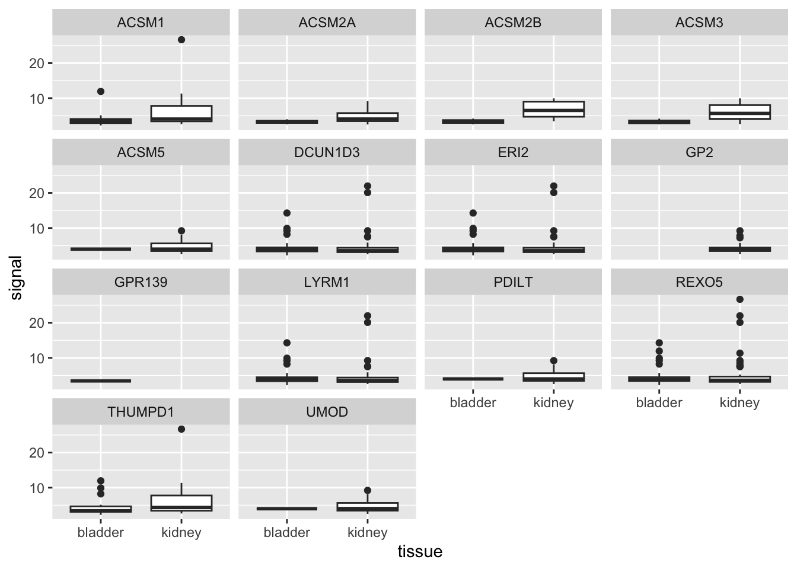
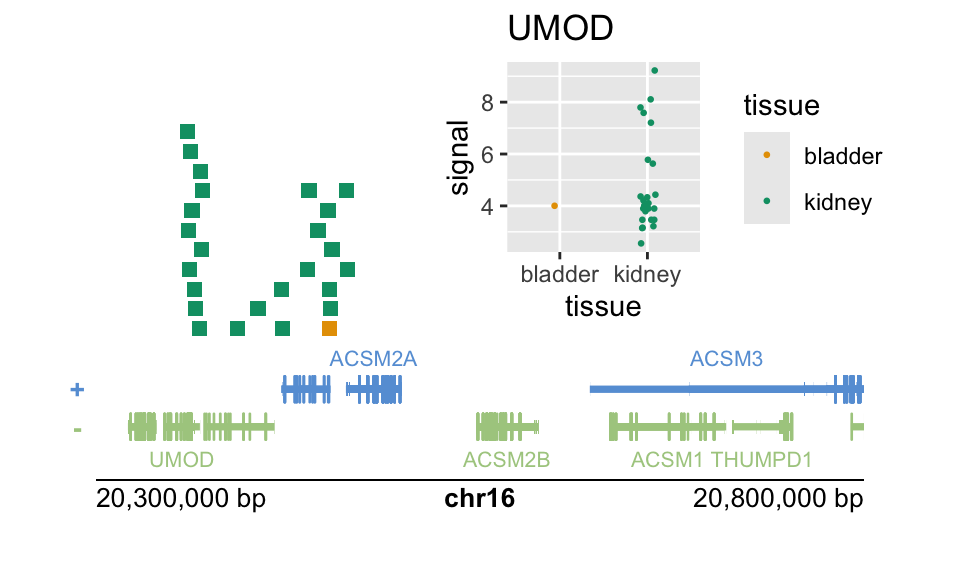

load("data/peaks.rda")4 Gene plots
Objective: for a region of the genome, find peaks near the TSS of genes and then plot their signal strength per gene, stratifying by the tissue origin of the peak.
We start by loading the pre-downloaded peaks ranges:
Likewise, we want to use hg19 genes again to match the hg19 peaks:
library(TxDb.Hsapiens.UCSC.hg19.knownGene)
library(org.Hs.eg.db)
g <- genes(TxDb.Hsapiens.UCSC.hg19.knownGene)Adding gene symbols:
library(plyranges)
g <- g %>%
mutate(gene_name = mapIds(org.Hs.eg.db,
gene_id, "SYMBOL", "ENTREZID"))Find a region of the genome near a kidney-specific gene:
g %>%
filter(gene_name == "UMOD")GRanges object with 1 range and 2 metadata columns:
seqnames ranges strand | gene_id gene_name
<Rle> <IRanges> <Rle> | <character> <character>
7369 chr16 20344373-20367623 - | 7369 UMOD
-------
seqinfo: 298 sequences (2 circular) from hg19 genomeregion <- data.frame(
seqnames="chr16",
start=20e6,
end=21e6) %>%
as_granges()Combine the bladder and kidney peaks, and select certain columns:
pks <- bind_ranges(bladder=bladder_pks,
kidney=kidney_pks,
.id="tissue") %>%
select(signal=signalValue, tissue)Finally, we perform the overlap join, locating peaks within 100kb of the TSS of the gene.
g_with_pks <- g %>%
anchor_5p() %>%
mutate(width=1) %>%
filter_by_overlaps(region) %>%
join_overlap_inner(pks, maxgap=1e5)
g_with_pks$tissue %>% table().
bladder kidney
197 328 We can construct a faceted set of boxplots, first we make a tibble of data for our plot.
library(dplyr)
library(tibble)
dat <- g_with_pks %>%
select(gene_name, signal, tissue, .drop_ranges=TRUE) %>%
as_tibble()Then pass the data to ggplot (we could have just passed the data directly, but we plan to re-use the data).
library(ggplot2)
dat %>%
ggplot(aes(tissue, signal)) +
geom_boxplot() +
facet_wrap(~gene_name)
Now let’s try to plot these in context, using plotgardener (Kramer et al. 2022). First we filter down to the peaks near UMOD.
umod <- g %>%
filter(gene_name == "UMOD") %>%
anchor_5p() %>%
mutate(width=1)
pks_to_plot <- pks %>%
filter_by_overlaps(umod, maxgap=1e5) %>%
anchor_center() %>%
mutate(width=1e4) # to make the ranges more visibleWe then define a color scheme for the tissue variable, and make a ggplot object which will be added to our genome plots.
cols <- function(n) palette.colors(n+2)[-c(1,3)]
col_vec <- cols(2)
names(col_vec) <- unique(dat$tissue)
p <- dat %>%
filter(gene_name == "UMOD") %>%
ggplot(aes(tissue, signal, col=tissue)) +
# here we set a seed for jitter
geom_point(size=.5, position=position_jitter(width=.1, seed=5)) +
scale_color_manual(values = col_vec)We then create some parameters that will be shared across a number of the plots in plotgardener.
library(plotgardener)
par <- pgParams(
chrom = "chr16",
chromstart = round((start(umod) - 1e5)/1e5)*1e5,
chromend = round((start(umod) + 4e5)/1e5)*1e5,
assembly = "hg19", just = c("left", "bottom")
)Finally we put all the pieces together on a page (for laying out the plot, first use showGuides=TRUE).
pageCreate(width = 5, height = 3, showGuides = FALSE)
plotGenes(
params = par, x = 0.5, y = 2.5, width = 4, height = .75
)
plotRanges(
pks_to_plot,
fill = colorby("tissue", palette=cols),
params = par, x = 0.5, y = 1.75, width = 4, height = 1.75
)
plotGenomeLabel(
params = par, x = 0.5, y = 2.5, length = 4,
just = c("left", "top")
)
plotGG(
p + ggtitle("UMOD"),
params = par, x = 2.25, y = 1.75, width = 2.5, height = 1.75
)